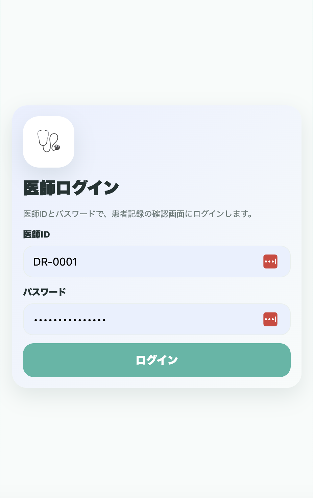
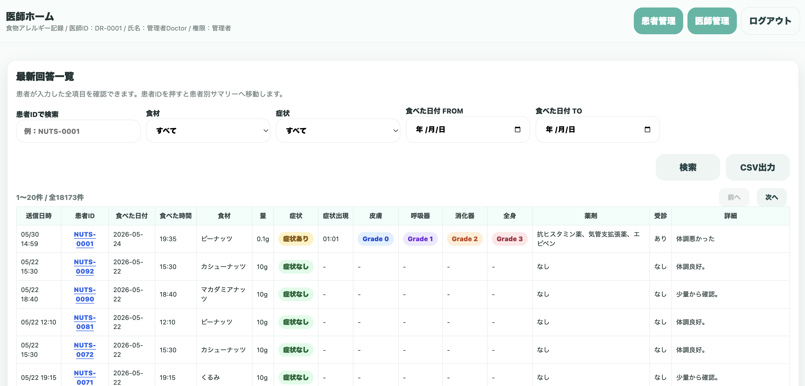
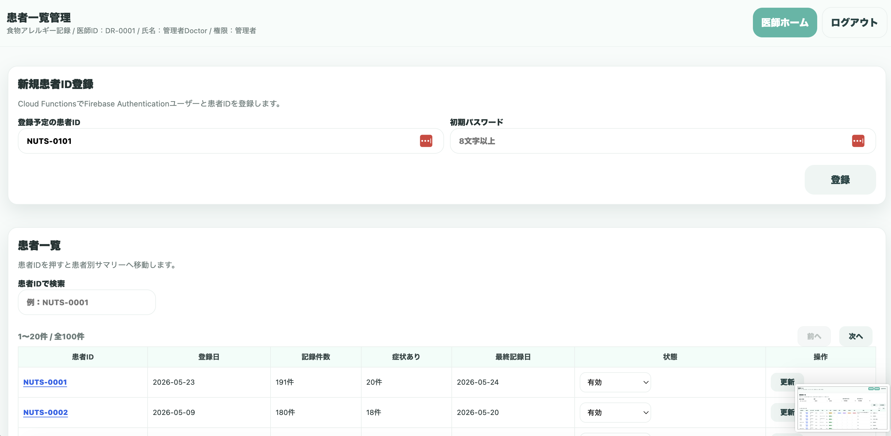
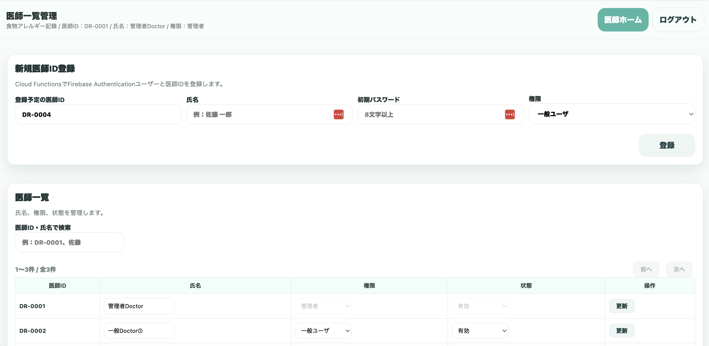

医師用 利用手順書
医師ログイン後に、患者記録の確認、患者ID登録、医師アカウント管理を行う手順です。
1. 医師ログイン
1医師IDとパスワードを入力する
医師ログイン画面で、発行された医師IDとパスワードを入力し、「ログイン」を押します。

医師ID（例：DR-0001）とパスワードでログインします。
2. 医師ホーム
2最新回答一覧を確認する
ログイン後、医師ホームに最新回答一覧が表示されます。右上から「患者管理」「医師管理」「ログアウト」へ移動できます。

患者IDを押すと患者別サマリーへ移動します。
3. 最新回答一覧の検索・出力
3条件を指定して検索する
患者ID、食材、症状、食べた日付FROM/TOで絞り込み、「検索」を押します。
| 検索項目 | 説明 |
|---|---|
| 患者ID | 特定の患者の記録を検索します。 |
| 食材 | ピーナッツ、カシューナッツ、くるみ等で絞り込みます。 |
| 症状 | 症状あり／なしで絞り込みます。 |
| 日付 | 食べた日付の期間を指定します。 |
必要に応じて「CSV出力」を押し、一覧データを出力します。
4. 患者管理
4新規患者IDを登録する
右上の「患者管理」を押すと、患者一覧管理画面が表示されます。新規患者IDと初期パスワードを入力し、「登録」を押します。

登録済み患者の記録件数、症状あり件数、最終記録日、状態を確認できます。
患者IDを押すと、患者別の記録確認画面へ移動します。状態を「無効」にすると、その患者の利用を停止できます。
5. 医師管理
5医師アカウントを管理する
医師管理は、管理者権限の医師のみ利用できます。医師ID、氏名、初期パスワード、権限を入力して新規医師IDを登録します。登録時には、利用者の役割に応じて「管理者」または「一般ユーザ」を選択してください。

医師一覧では、氏名・権限・状態を変更し「更新」できます。
| 権限 | 説明 | 注意点 |
|---|---|---|
| 管理者 | 患者管理と医師管理を利用できます。患者IDの登録・状態変更、医師IDの登録・権限変更を行えます。 | システム設定に関わる操作ができるため、責任者など必要最小限の人数に限定してください。 |
| 一般ユーザ | 患者記録の確認など、通常利用に必要な機能を利用します。 | 医師アカウントの追加や権限変更などの管理操作は行いません。 |
6. ログアウト
6利用終了時はログアウトする
画面右上の「ログアウト」を押します。共用端末では必ずログアウトしてください。